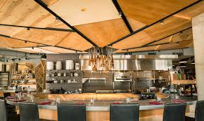

Art of the Table

Art of the Table, located in Seattle, stands out as a restaurant deeply committed to the craft of exquisite dining, emphasizing seasonal and locally-sourced ingredients.
The menu reflects a creative and elegant approach to cooking, with offerings that showcase the best of what the Pacific Northwest has to offer.